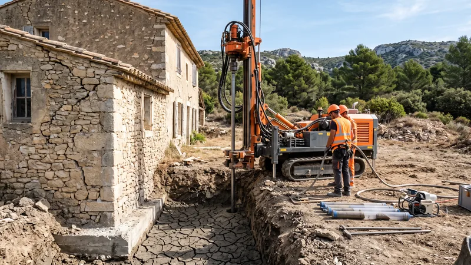

Fondations sur sol argileux : retrait-gonflement, solutions et prix 2026

Dans les Bouches-du-Rhône, une large part des communes est classée en exposition moyenne ou forte au retrait-gonflement des argiles, et ce sol-là fait fissurer les maisons dont les fondations s'arrêtent trop haut. Construire ou réparer sur argile ne coûte pas forcément plus cher que de construire ailleurs : cela coûte plus cher quand on l'a découvert après. Ce guide explique le phénomène, les obligations d'étude de sol depuis la loi ELAN, les solutions pour une maison neuve et pour une maison fissurée, et les prix 2026 de chacune.
Pourquoi l'argile fissure les maisons
Une argile change de volume avec son humidité : elle gonfle en hiver quand elle se charge d'eau, se rétracte en été quand elle sèche. Le sol se soulève et redescend de quelques millimètres à quelques centimètres chaque année, sur une épaisseur de 1 à 2 mètres sous la surface, parfois davantage à proximité d'un arbre qui pompe l'eau. Une fondation posée dans cette zone de dessiccation suit le mouvement ; comme il n'est pas uniforme sous toute la maison, la structure se vrille, et les fissures apparaissent aux angles des ouvertures et aux jonctions entre corps de bâtiment.
Les étés secs de 2022 et de 2023 ont multiplié les sinistres en Provence, au point que la sécheresse est devenue la deuxième cause d'indemnisation en catastrophe naturelle après les inondations. Les secteurs concernés dans le département sont bien identifiés : l'ancien bassin minier autour de Gardanne, Meyreuil et Fuveau, une partie des plateaux au nord d'Aix-en-Provence, la vallée de l'Arc et de nombreuses marnes argileuses du pays salonais. La carte d'exposition est consultable commune par commune sur le site Géorisques.
Reconnaître un sol argileux avant de construire
Trois indices se lisent sans étude : une terre qui colle aux bottes et se craquelle en polygones l'été, une végétation de chênes et de pins qui souffre peu de la sécheresse parce que ses racines trouvent l'eau en profondeur, et des fissures sur les maisons anciennes du voisinage. Mais seul un sondage dit à quelle profondeur l'argile commence, sur quelle épaisseur elle est sensible, et ce qu'il y a dessous.
L'étude de sol est obligatoire depuis 2020
L'article 68 de la loi ELAN, applicable aux ventes et aux contrats signés depuis le 1er octobre 2020, impose deux études dans les zones d'exposition moyenne et forte :
- L'étude G1 PGC (principes généraux de construction), fournie par le vendeur d'un terrain constructible, annexée à la promesse de vente : 800 à 1 500 €.
- L'étude G2 AVP (avant-projet), commandée par le maître d'ouvrage avant de construire, qui dimensionne réellement les fondations : 1 500 à 3 500 € avec la phase projet. Elle est aussi exigée par la plupart des assureurs décennale.
Le constructeur qui s'en dispense engage sa responsabilité, et l'assureur peut refuser de couvrir un sinistre lié au sol. Rapportées au coût d'une reprise en sous-œuvre, ces études sont l'assurance la moins chère du projet.
Fondations d'une maison neuve sur sol argileux
Le principe est toujours le même : ancrer la maison sous la zone qui bouge, et l'empêcher de se déformer entre deux appuis. L'étude G2 retient l'une de ces solutions, ou les combine.
| Solution | Principe | Prix indicatif |
|---|---|---|
| Semelles filantes approfondies | Fouilles descendues à 1,20 à 2,50 m selon l'étude, sous la zone de dessiccation, avec chaînages renforcés | 100 à 200 €/ml, surcoût de 10 à 20 % par rapport à une semelle standard |
| Radier rigide | Dalle portée armée sur toute l'emprise, qui répartit les mouvements au lieu de les subir ponctuellement | 120 à 200 €/m² |
| Puits de fondation | Massifs en gros béton descendus sur la couche stable, reliés par des longrines | 300 à 600 € l'unité |
| Micropieux | Pieux forés de 10 à 25 cm de diamètre, ancrés à 3 à 20 m, reliés par des longrines | 150 à 400 €/ml, soit 3 000 à 8 000 € par point d'appui |
Pour une maison de 100 m² en semelles filantes, le passage d'une fouille à 0,80 m à une fouille à 1,60 m revient à sortir deux fois plus de terre et à couler deux fois plus de béton de propreté et de remplissage : c'est le « surcoût de 10 à 20 % » qu'on lit dans les devis, soit 1 500 à 4 000 € sur un lot fondations de 12 000 à 20 000 €. Les micropieux changent d'échelle : huit à douze points d'appui pour un pavillon, soit 25 000 à 90 000 €, et ils ne se justifient que lorsque la couche porteuse est hors de portée des fouilles.
Les dispositions qui ne coûtent presque rien
- Un trottoir périphérique de 1 à 1,50 m de large, étanche, en pente vers l'extérieur : il stabilise l'humidité du sol au pied des murs, là où le retrait est le plus fort.
- Les eaux pluviales éloignées : descentes raccordées à un réseau ou à un puits d'infiltration à plus de 3 m, jamais rejetées au pied de la façade.
- Les arbres tenus à distance : un arbre adulte assèche l'argile sur un rayon égal à sa hauteur. Un cyprès ou un chêne à 4 m d'une maison sur argile est une fissure annoncée.
- Un vide sanitaire plutôt qu'une dalle sur terre-plein : il isole le plancher des mouvements du sol et facilite une reprise ultérieure. Notre guide sur le prix d'un vide sanitaire chiffre l'écart.
Un terrain argileux à préparer ?
STP Terrassement réalise les fouilles profondes, les puits et les plateformes de fondation définis par l'étude de sol, dans le pays d'Aix, le bassin minier de Gardanne et jusqu'à Marseille.
Pressé ? 07 45 14 20 49 ou WhatsApp
Maison existante fissurée : la reprise en sous-œuvre
Quand les fissures sont là, on ne reconstruit pas les fondations : on les reprend par-dessous, sans toucher aux murs. Deux techniques dominent en Provence.
Micropieux et longrines
Une mini-foreuse, qui passe par un portail de 1,50 m, fore un micropieu tous les 2 à 3 mètres le long des murs porteurs, jusqu'à la couche stable. Les têtes de pieux sont reliées aux fondations existantes par des longrines ou des corbeaux en béton armé, et la maison repose désormais sur un sol qui ne bouge plus. C'est la solution définitive, celle que retiennent les experts d'assurance pour les sinistres sécheresse : 150 à 400 € le mètre linéaire de micropieu, 3 000 à 8 000 € par point d'appui, soit un budget de 25 000 à 90 000 € pour un pavillon courant selon le nombre de points et la profondeur.
Injection de résine expansive
Une résine injectée sous la semelle gonfle, comprime le sol et le rend moins sensible à l'eau. L'intervention est rapide, sans terrassement, et moins chère qu'un pieu, mais elle traite le sol en place plutôt que de s'en affranchir : elle convient aux désordres modérés sur une argile peu épaisse, pas à une maison qui repose sur trois mètres d'argile active. Elle se chiffre au mètre linéaire de mur traité, après étude.
Et le drainage ?
Un drainage périphérique n'empêche pas l'argile de sécher l'été ; il évite qu'elle se gorge l'hiver et réduit l'amplitude du mouvement. Il accompagne une reprise, il ne la remplace pas. Pour un terrain en pente qui reçoit les eaux de l'amont, c'est en revanche la première chose à faire, comme l'explique notre guide du drainage de terrain.
Sécheresse et assurance : ce qui est pris en charge
Les fissures dues au retrait-gonflement sont indemnisées par l'assurance habitation au titre des catastrophes naturelles, à condition qu'un arrêté de reconnaissance ait été publié pour la commune et la période concernées. La déclaration se fait dans les 30 jours suivant l'arrêté, une franchise légale s'applique, et l'expert mandaté par l'assureur décide de la solution de reprise : il retient le plus souvent les micropieux pour les maisons les plus touchées. Sans arrêté, ou pour une maison de moins de dix ans, c'est la garantie décennale du constructeur qui joue, si l'étude de sol et les règles de l'art ont été respectées : d'où l'importance de pouvoir produire la G2.
Ce que fait STP Terrassement sur ces chantiers
Nous réalisons les fouilles profondes, les puits et les plateformes de fondation définis par l'étude G2, et nous préparons les accès et les tranchées des entreprises de fondations spéciales qui forent les micropieux. Sur un terrain argileux, nous ouvrons les fouilles au plus près du coulage et nous les protégeons de la pluie : une fouille qui a pris l'eau dans l'argile se referme et se dégrade en quelques jours. Nous travaillons dans tout le pays d'Aix, à Gardanne, Fuveau, Meyreuil, Bouc-Bel-Air et jusqu'à Marseille, et nous vous indiquons franchement quand un terrain demande une solution que nous ne réalisons pas nous-mêmes.
Questions fréquentes
Quel est le prix des fondations sur un sol argileux ?
Pour une maison neuve de 100 m², comptez le lot fondations habituel de 12 000 à 20 000 € majoré de 10 à 20 % pour des semelles approfondies ou un radier rigide, soit 1 500 à 4 000 € de surcoût. Les micropieux, réservés aux couches porteuses profondes, se chiffrent au point d'appui : 3 000 à 8 000 €, huit à douze points pour un pavillon.
À quelle profondeur fonder sur argile ?
Sous la zone de dessiccation, c'est-à-dire la tranche de sol dont l'humidité varie avec les saisons : 1,20 à 1,50 m dans la plupart des cas, jusqu'à 2,50 m sur une argile très active ou près d'arbres. C'est l'étude G2 qui fixe la cote, pas une règle générale ; le minimum hors gel de 60 à 80 cm en PACA n'est pas suffisant sur argile.
L'étude de sol G2 est-elle obligatoire ?
Oui, pour toute construction de maison individuelle en zone d'exposition moyenne ou forte au retrait-gonflement depuis le 1er octobre 2020, en application de la loi ELAN. Le vendeur du terrain fournit l'étude G1 (800 à 1 500 €), le maître d'ouvrage commande la G2 (1 500 à 3 500 €). La G2 est aussi demandée par la plupart des assureurs décennale.
Combien coûte une reprise en sous-œuvre par micropieux ?
Entre 25 000 et 90 000 € pour un pavillon courant en 2026, à raison de 3 000 à 8 000 € par point d'appui, huit à douze points, un tous les 2 à 3 mètres de mur porteur. Le prix dépend surtout de la profondeur de la couche stable et de l'accessibilité pour la foreuse. Lorsqu'un arrêté de catastrophe naturelle sécheresse a été publié, l'assurance habitation prend en charge l'essentiel.
Comment savoir si mon terrain est argileux ?
Consultez la carte d'exposition au retrait-gonflement des argiles sur Géorisques, commune par commune. Sur le terrain, une terre qui colle et se craquelle l'été, et des fissures sur les maisons voisines, confirment le soupçon. Seul un sondage géotechnique dit ensuite à quelle profondeur l'argile commence et ce qu'il y a dessous.
Radier ou semelles filantes sur sol argileux ?
Le radier rigide (120 à 200 €/m²) répartit les mouvements sur toute la surface et convient quand l'argile est présente sur une grande épaisseur à faible profondeur. Les semelles filantes approfondies (100 à 200 €/ml) suffisent quand une couche stable est atteignable à moins de 2,50 m. Le choix revient à l'étude G2, qui compare les deux sur votre sondage.
Un drainage suffit-il à stabiliser une maison sur argile ?
Non. Le drainage limite le gonflement hivernal mais n'empêche pas le retrait estival, qui est la cause principale des fissures. Il accompagne une reprise en sous-œuvre ou des fondations approfondies ; seul, il ne stabilise une maison que si les désordres sont mineurs et liés à un excès d'eau ponctuel.